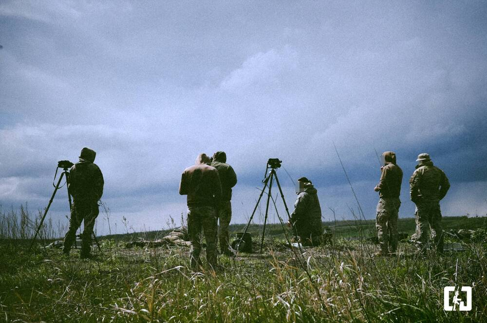
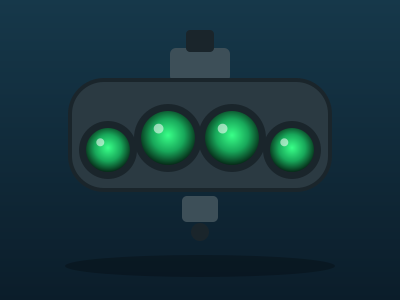
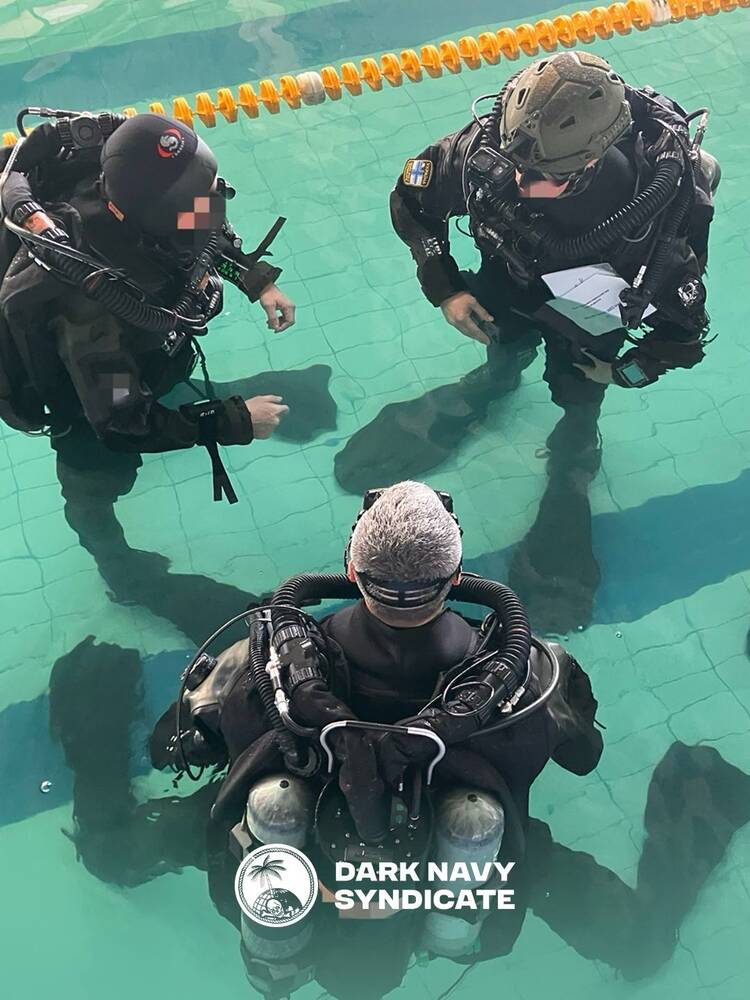

Головна

Фото: автор (знак у кадрі), використано з дозволуХіт продажів

- Панорамний ПНВ, поле зору ~97°
- Гарантія 24 місяці на ПНВ
- Доставка по всій Україні
Чому DEEP OPS
Допоможемо обрати ПНВ і спорядження під ваш бюджет: від першого цифрового монокуляра до панорамного приладу.
Кожен прилад нічного бачення перевіряємо й тестуємо перед відправкою покупцю.
24 місяці гарантії на ПНВ, 12 місяців — на підводне спорядження.
Сайт створено як лабораторну роботу з веб-розробки; товари та ціни є прикладом.
Від групи — до деталей
